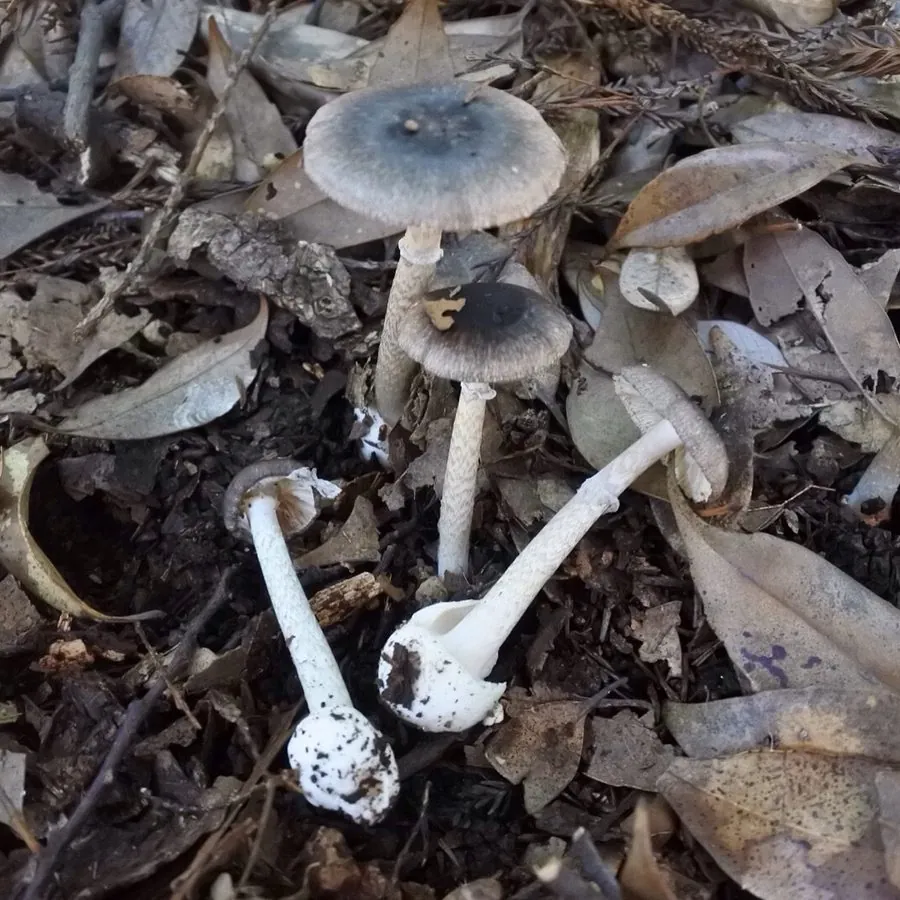

真菌 · 真菌界
灰花纹鹅膏 Amanita fuliginea

鹅膏科蘑菇，菌盖灰褐带深色花纹、菌柄有菌环与菌托，含鹅膏毒肽，属剧毒菌，误食可致肝衰竭死亡。
- 分类
- 门担子菌门纲伞菌纲目伞菌目科鹅膏科属鹅膏属
- 栖息环境
- 中国南方阔叶林与针阔混交林地上，与栎、松等形成外生菌根
- 地理分布
- 中国广东、广西、云南、四川、湖南等地，东亚亚热带林区
- 保护级别
- 暂无评估；分布较广，但应保护其林地生境
物种志
灰花纹鹅膏的子实体中等，菌盖直径 5–12 厘米，初期半球形，后平展，表面灰褐至黑褐色，中央色深并具深色花纹或放射状纤维，边缘色浅。菌肉白色。菌褶白色，离生，密集。菌柄长 8–15 厘米，直径 1–2 厘米，白色至灰白，上部有灰白色膜质菌环，基部膨大并具白色袋状菌托。孢子印白色，孢子近球形。
灰花纹鹅膏是中国南方夏秋季生于阔叶林或针阔混交林地上的剧毒菌，与栎、松等形成外生菌根。它含有鹅膏毒肽，属剧毒菌：误食后潜伏 6–24 小时，出现呕吐腹泻，随后进入假愈期，数日后暴发肝肾功能衰竭，病死率高。它常与可食的灰褐色蘑菇混淆，是华南、西南地区蘑菇中毒死亡的重要原因。识别时要检查菌柄基部是否有袋状菌托、上部是否有菌环，二者俱全且菌盖带花纹者，绝不可食。
形态与习性
- 菌盖直径 5–12 厘米，灰褐至黑褐，带深色花纹
- 菌褶白色，离生，密集
- 菌柄长 8–15 厘米，有灰白菌环与袋状菌托
- 孢子印白色，孢子近球形
- 毒性含鹅膏毒肽，可致肝衰竭死亡，严禁采食
- 识别菌盖有花纹、菌柄具菌环与菌托
趣味知识
- 灰花纹鹅膏菌盖上的深色花纹是它的标志，也是与可食灰褐蘑菇混淆的原因。
- 它同样遵循“戴帽、系裙、穿靴”的鹅膏特征，菌托藏在土中，采挖时要看基部。
- 误食后 6–24 小时才发作，假愈期过后肝衰竭进展迅速。
- 华南多起家庭聚集性蘑菇中毒，溯源的元凶常是灰花纹鹅膏。